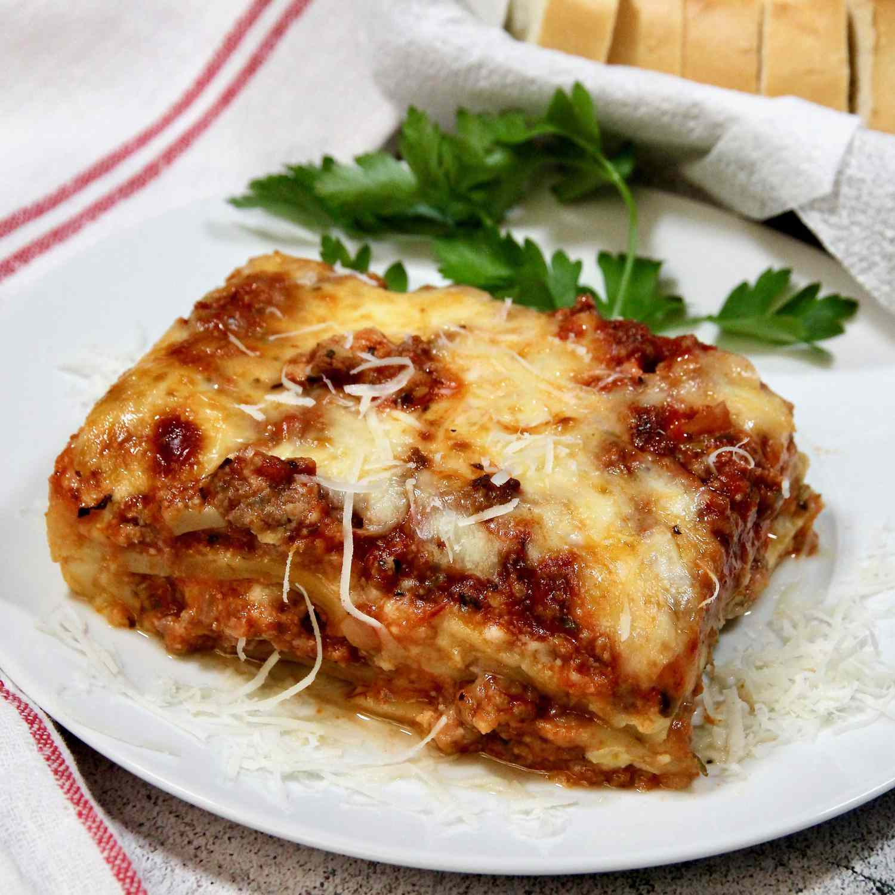

Homemade Lasagna

The lasagna is a pretty popular baked Italian dish
that consists of wide strips of pasta cooked and
layered with meat or vegetables, cheese and tomato sauce.
Here we going to learn the ingredients that make
a lasagna and the step-by-step on how to make the a
perfect homemade lasagna yourself. So let's jump right
into it.
Ingredients
- 1/2 pound ground pork
- 1/2 pound lean ground beef
- 1/2 minced onion
- 1 (28 ounce) can crushed tomatoes
- 2 tablespoons chopped fresh parsley, divied
- 1 clove garlic, crushed
- 1 1/2 teaspoons dried basil
- 1 1/2 teaspoons of salt
- 1/2 teaspoon of dried oregano
- 1 (16 ounce) package lasagna noodles
- 1 pound small-curd cottage cheese
- 3 large eggs
- 3/4 cup grated Parmesan cheese
- 2 teaspoons of salt
- 1/4 teaspoon of ground black pepper
- 1 (16 ounce) package shredded mozzarella cheese
Step-by-step
-
Combine pork and ground beef in a large, deep
skillet over medium-hight heat; cook and stir
until browned and crumbly, 5 to 7 minutes. Add
onion and cook until translucent, about 5 minutes.
-
Stir in crushed tomatoes, tomate sauce, 1 tablespoon
fresh parsley, garlic, basil, salt, oregano and sugar.
Reduce heat to medium-low and simmer, stirring
occasionally, for 30 minutes.
-
While the sauce is simmering, bring a large pot of
lightly salted water to a boil. Cook lasagna noodles
in the boiling water, stirring occasionally, until
tender yet firm to the bite, 8 to 10 minutes. Drain
and set aside.
-
While the noodles are cooking, preheat the oven to
375 degrees F (190 degrees C).
-
Mix cottage cheese, Parmesan cheese, eggs, remaining
1 tablespoon fresh parsley, salt, and pepper in a bowl
until combined.
-
Assemble lasagna: Spread a spoon or two of sauce over
the bottom of a 9x13-inch baking dish just to coat it.
Place two layers of noodles over the sauce to cover.
Layer with 1/2 of the cheese mixture, 1/2 of the
remaining sauce, and 1/2 of the mozzarella cheese.
Repeat layers using the remaining noodles, cheese
mixture, sauce, and mozzarella. Cover the baking dish
with aluminium foil.
-
Bake in the preheated oven for 30 to 40 minutes.
Remove the foil and bake until cheese is golden brown,
5 to 10 more minutes.
-
Remove from the oven and let stand for 10 minutes
before cutting and serving.
-
Finally, after 10 minutes serve and enjoy your
lasagna!